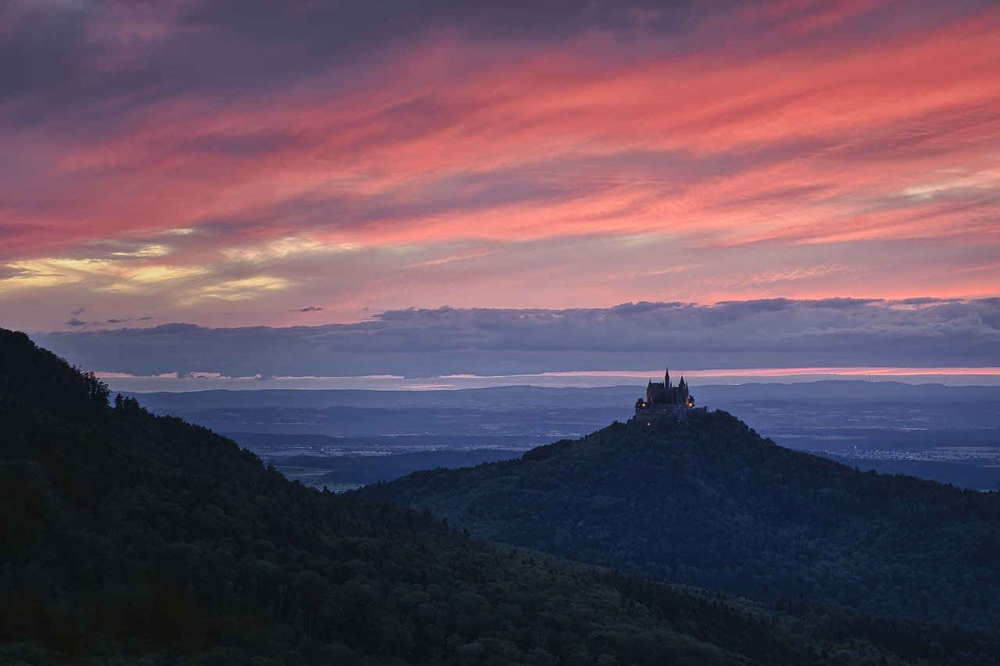

キャンプ初心者必見｜
一日の流れや道具選びのコツ
キャンプの1日の流れ
| 11:30〜 | チェックイン | プランによって時間が変わるので注意が必要 |
| 12:00〜 | テント周りの設営 | チェックイン後すぐがおすすめ |
| 16:00〜 | 火の準備 | 夜は冷えるので料理の2時間程度前がおすすめ |
| 18:00〜 | 夜ご飯の準備 | 程よく手を抜いて作るのがポイント |
| 22:00〜 | 就寝 | 周りの人のことを考えて大きな声は控える |
| 08:00〜 | 起床 | 朝ご飯はカンタンにできるものがおすすめ |
| 09:00〜 | 片付け | ゴミは決められたところに捨てましょう |
| 10:30〜 | チェックアウト | 早めの準備が大切 |
初心者が揃えておきたい道具リスト
デイキャンプ編
- タープ or テント
- 日陰や風除けがあるだけかなり快適になりますのでデイキャンプでも1つは用意しておきたいアイテム
- コンロ or 焚き火
- 焚き火や、料理を作るときに必要です。手軽に済ませたいならコンビニで食料を買うのもOK！
- 燃料
- 燃料があると着火が早く、時間短縮に繋がります。特にデイキャンプでは時間が命！手早く料理に移りたい人向けです。
- クーラーバック
- 食材や飲み物運ぶときに使用します。料理など温かいものを運びたい人は2つバッグがあると便利です。
- テーブル＆チェア
- 食事をしたり、休憩するときに必要な道具です。必需品なので忘れないようにしましょう。
- 食器/調理道具
- キャンプ場によってはレンタルすることも可能です。しかしレンタル代がかかってしまうのでなるべく自分で用意しましょう。また紙皿や割り箸を持っていくと後片付けをカンタンに済ませることができます。
- ゴミ袋
- 食事などで出たゴミを入れるために必要です。ゴミ捨て場が用意されているキャンプ場もありますが、持参しておくことをおすすめです。
初心者が揃えておきたい道具リスト
テント泊編
- タープ or テント
- 日陰や風除けがあるだけかなり快適になりますのでデイキャンプでも1つは用意しておきたいアイテム
- コンロ or 焚き火
- 焚き火や、料理を作るときに必要です。手軽に済ませたいならコンビニで食料を買うのもOK！
- 燃料
- 燃料があると着火が早く、時間短縮に繋がります。特にデイキャンプでは時間が命！手早く料理に移りたい人向けです。
- クーラーバック
- 食材や飲み物運ぶときに使用します。料理など温かいものを運びたい人は2つバッグがあると便利です。
- テーブル＆チェア
- 食事をしたり、休憩するときに必要な道具です。必需品なので忘れないようにしましょう。
- 食器/調理道具
- キャンプ場によってはレンタルすることも可能です。しかしレンタル代がかかってしまうのでなるべく自分で用意しましょう。また紙皿や割り箸を持っていくと後片付けをカンタンに済ませることができます。
- ゴミ袋
- 食事などで出たゴミを入れるために必要です。ゴミ捨て場が用意されているキャンプ場もありますが、持参しておくことをおすすめです。
